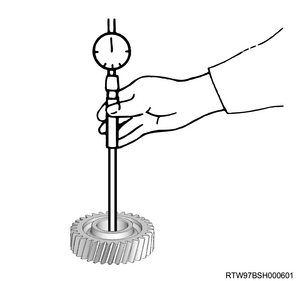
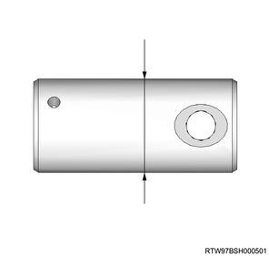

1. Inspect the reverse idle gear.
Note
2. Measure the reverse idle gear using a dial gauge.
Note
| Inner diameter of gear | |
| Standard value | ： 29.980 to 30.000 mm { 1.1803 to 1.1811 in } |
| Limit | ： 30.000 mm { 1.1811 in } |

1. Inspect the reverse idle gear shaft.
Note
2. Measure the reverse idle gear shaft using the micrometer.
Note
| Inner diameter of gear | |
| Standard value | ： 29.926 to 29.939 mm { 1.1782 to 1.1787 in } |
| Limit | ： 29.926 mm { 1.1782 in } |
